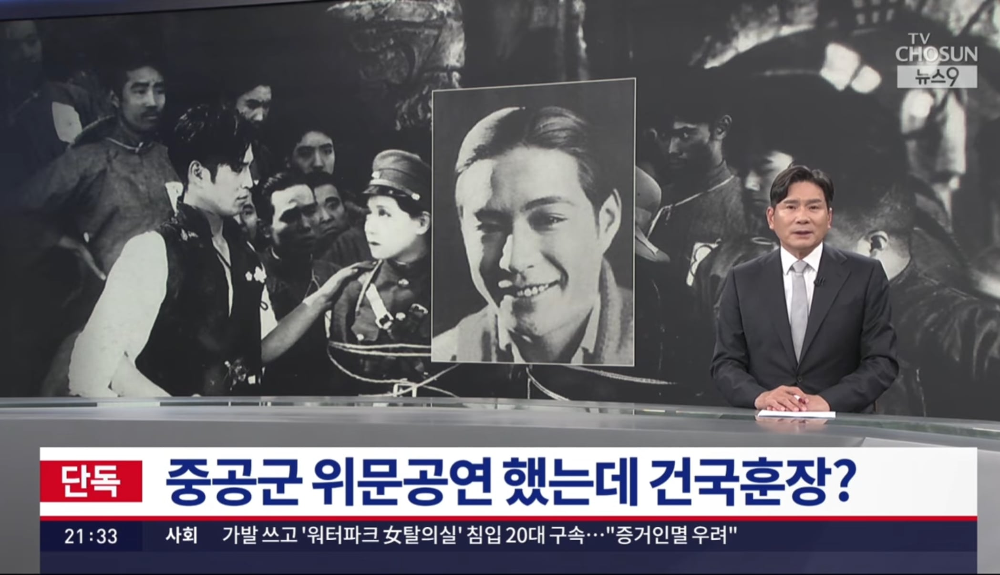
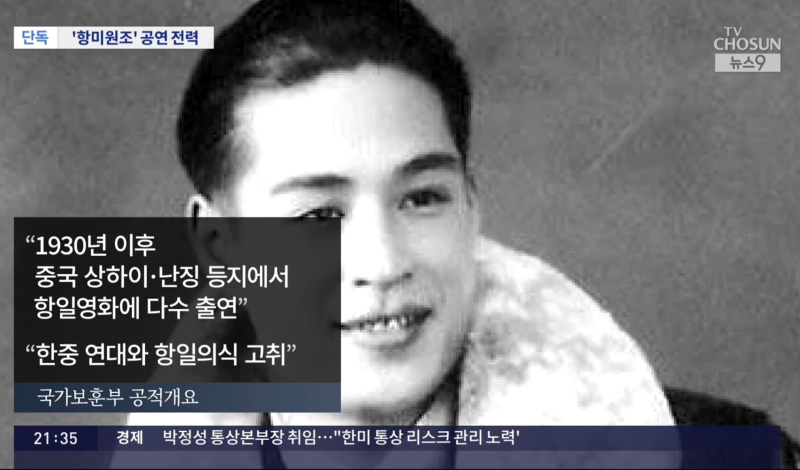
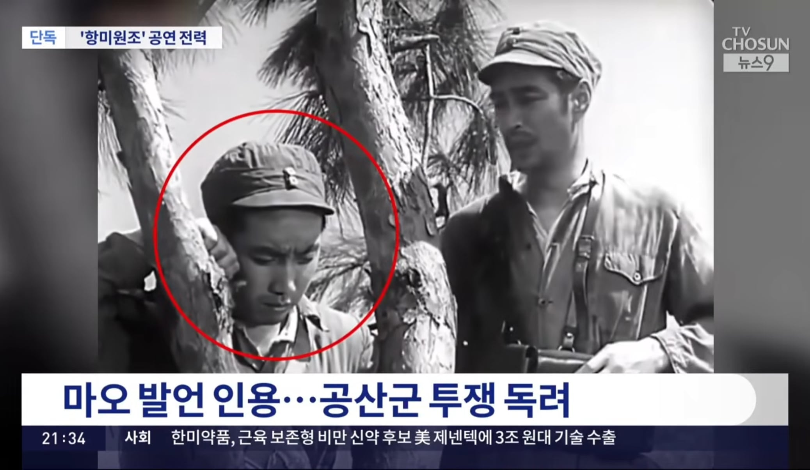
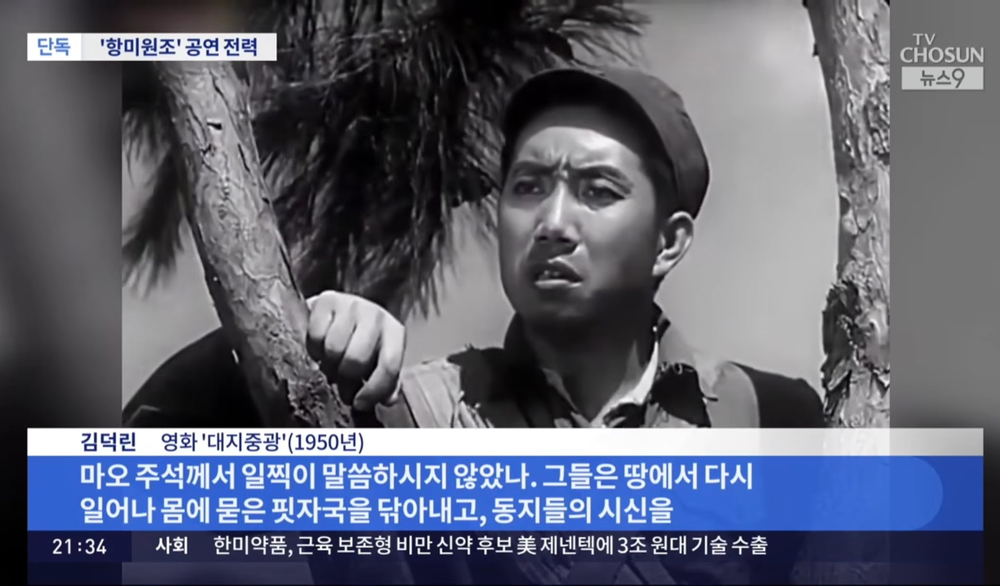
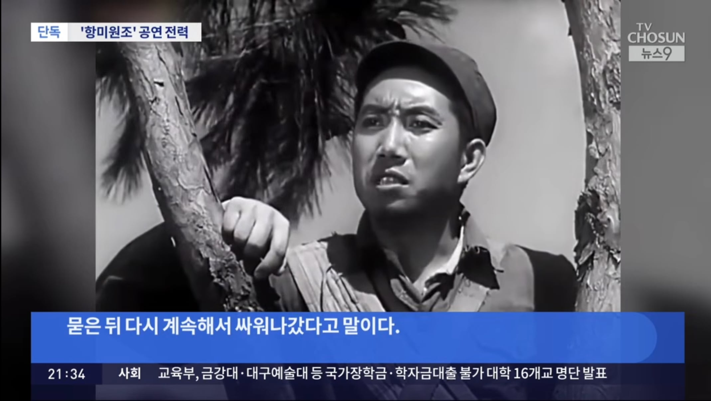
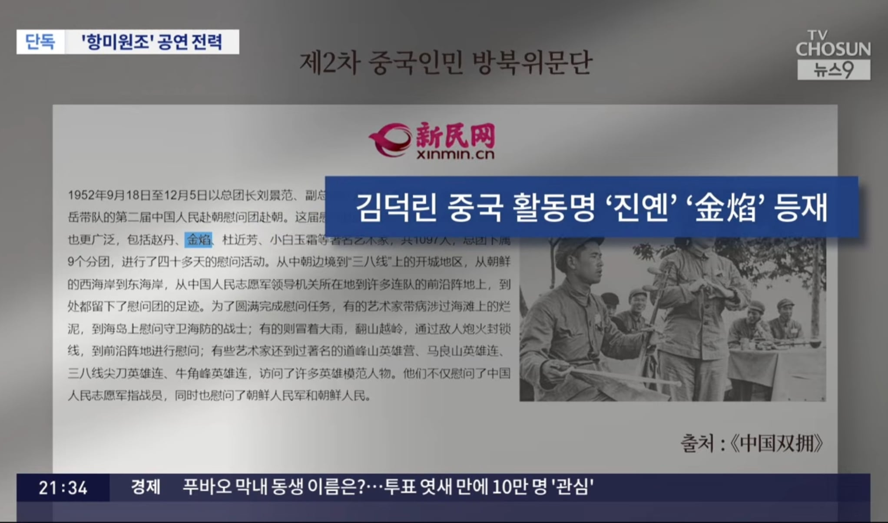
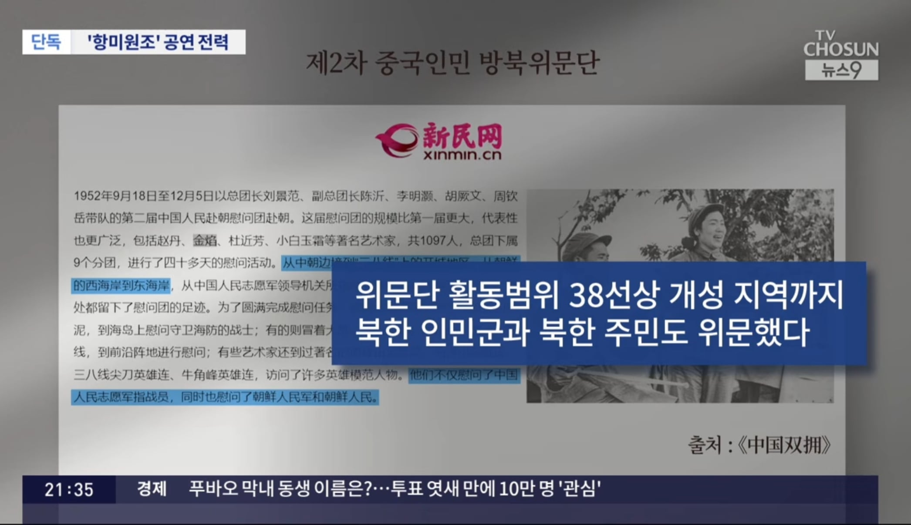
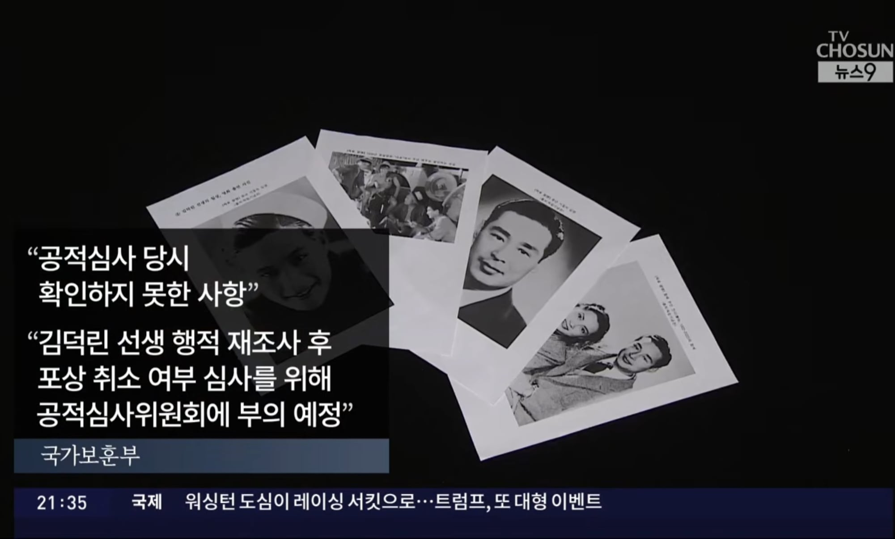

"논란 일자 몰랐다 레후"
한중 연대 고취라는 게 '북한-중국' 연대 고취를 말하는 건가?
ㅋㅋㅋ








"논란 일자 몰랐다 레후"
한중 연대 고취라는 게 '북한-중국' 연대 고취를 말하는 건가?
ㅋㅋㅋ
댓글
수집 당시 댓글 29개
도르래 · 7 시간 전
친일파한테도 안 그랬음
두글자 · 5 시간 전
당장에 배우 하나 나락 간 게 한 달이 채 안 됐는데?
도르래 · 5 시간 전
그건 본인이 홍보하다 꼬인 거라
두글자 · 5 시간 전
본인이 홍보해서 꼬인 이유가 친일파 자손인게 파묘돼서 그런거잖음
도르래 · 5 시간 전
이지아는 다시 관련 논란 커지기 전엔 계속 활동했고 유명인 아니면 그닥 영향 없어서
클로드 · 11 시간 전
빨갱이는 다 죽여야됨
Hmmmmmm · 11 시간 전
쎼쎄이야
왜용 · 11 시간 전
독립후 나라를 팔아먹으려 했다는거지?
말이야방구야 · 11 시간 전
이게 단순히 친중 정치라 할 수 있나 이따구로 하니까 빨갱이 소리듣지
StereoDepth · 11 시간 전
아버지 김필순 지사는독립운동을 하다가일본에 의해 수배되자 1912년에만주로 이주하였다. 이에 그의 국적은 1912년부터중화민국이었다. 이후 그의 아버지는 독립운동을 하다가 일본 첩자에 의해 살해되었고, 김염은 혼자 남아 고아가 되었다. (중략) 1930년대 중반 이후엔 중일전쟁으로 인해서 중국의 국토가 초토화가 되면서 영화 활동이 뜸해졌으며 1949년에는중국이 들어서면서 국적도 바뀌었다. 이후에도 순수 예술가이기를 고집하며 중국공산당에 가입하지 않았다. 배우 생활의 말기때인 1950년대 부터는 위 관련 질환에 시달리게 되었다. 그러다가 1966년에 벌어진 문화대혁명 기간에는 자본주의 예술가라는 죄목으로 인해서 투옥되어서 수용소에서 강제노동을 했다. 그러다가 무려 8년간에 걸친 옥고 끝에 1973년에 석방된후 약 10년 동안의 투병생활을 이어가던 도중 위암으로 1983년 12월 27일에 상하이에서 사망했다. 그의 묘는 중국 상하이시에 있는 중국 문화 예술인의 묘역인 복수원에 있다. 2026년 8월 15일, 대한민국 정부는 그에게대한민국 임시정부에 자금을 지원하고, 항일의식을 고취하는 다수의 영화에 주연으로 출연해 한국과 중국 국민에게 독립 의지를 고취한 공로로 건국훈장 애족장을 추서하였다.이로서 본인도 아버지와 함께 대한민국 정부로부터 독립유공자로 인정받게 되었다. 그런데, 2026년 8월 24일6.25 전쟁당시 북한군을 위문한 2차 항미원조 공연 위문단으로 공연했다는 기록이 발견되면서 국가보훈처에서 행적을 재조사하겠다고 밝혔다. -------- 기존에 공개된 행적대로라면 주는 게 맞는 데 하필이면 수면 아래에 감춰졌던 항미원조 위문 공연이 뒤늦게 드러나면서 걸린거네. 국가보훈부에서 조사를 제대로 안한 듯
니이름은 · 11 시간 전
걸린것도 어제네 ㅋㅋㅋㅋ
하드코딩 · 10 시간 전
점령군이 억지로 시킨 것도 아니고 중국에서 북한까지 가서 한 거야?
휘유우우우 · 6 시간 전
8월 24일에 드러났네 ㅋㅋㅋㅋ
별헤는밤 · 11 시간 전
팀컬러 꼬라지
강도야도강 · 10 시간 전
개미친시뻘갱이년이네. 대한민국 멸망시키려는 새끼들 앞에서 재롱잔치나 하셨어? 카아아아악퉷!!
오르다말아 · 10 시간 전
항쟁항일 테마로 묶는가보지 다음은 뭐 일본?
미더덕휴전 · 10 시간 전
이야 아주 나라를 중국에 팔아버리지 그랴
롯데자이언츠야구단 · 10 시간 전
ㅋㅋㅋㅋㅋㅋㅋㅋㅋㅋㅋㅋㅋㅋㅋㅋㅋㅋㅋㅋㅋㅋㅋㅋㅋㅋㅋㅋㅋㅋㅋㅋㅋㅋㅋㅋㅋㅋㅋㅋㅋㅋ
베레타38 · 10 시간 전
따자하오
곰곰배추김치 · 10 시간 전
역시 풀 한 포기 남지 않는....
맛있는고등어 · 10 시간 전
뭘 몰라시발
절세기회 · 10 시간 전
어떻게 정권만 바뀌면 서로 극과극으로 달리냐 아니 뭐 지켜야할 가치나 선이란게 아예없나 콩가루 나라야 정말
웨스트젯 · 8 시간 전
모를리가 없음 ㅋ 한국은 친일매국한테는 엄격한데 왜 매국빨갱이들한테는 관대한지 진짜 모름
니2니 · 8 시간 전
의도적이네 ㅋㅋㅋㅋㅋㅋㅋㅋㅋㅋㅋ
보노본호 · 8 시간 전
빨갱이는 다 죽여야
닉네임변경212 · 7 시간 전
미쳤구나 나라가
가레스 · 7 시간 전
나라가 미쳐가네
코알못 · 7 시간 전
전쟁걱정은없겠다 ㅋㅋ 이랏샤이마세 할거니까 ㅋㅋㅋㅋㅋㅋㅋㅋ
Hmmmmmm · 1 시간 전
欢迎光临